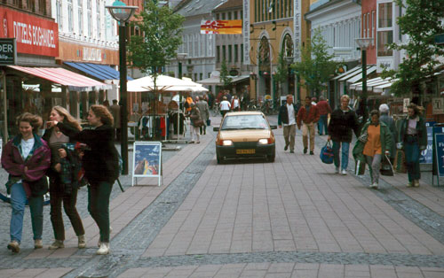

At TOPP there’s a lot of traffic discussion, since a substantial portion of the organization is dedicated to Livable Streets initiatives. One of the traffic ideas people have gotten excited about is Woonerf. This is a Dutch traffic planning idea. In areas where there’s the intersection of lots of kinds of traffic (car, pedestrian, bike, destinations and through traffic) you have to deal with the contention for the streets. Traditionally this is approached as a complicated system of rules and right-of-ways. There’s spaces for each mode of transportation, lights to say which is allowed to go when (with lots of red and green arrows), crosswalk islands, concrete barriers, and so on.
A problem with this is that a person can only pay attention to so many things at a time. As the number of traffic controls increases, the controls themselves dominate your attention. It’s based on the ideal that so long as everyone pays attention tothe controls, they don’t have to pay attention to each other. Of course, if there’s a circumstance the controls don’t take into account then people will deviate (for instance, crossing somewhere other than the crosswalk, or getting in the wrong lane for a turn, or the simple existance of a bike is usually unaccounted for). If all attention is on the controls, and everyone trusts that the controls are being obeyed, these deviations can lead to accidents. This can create a negative feedback cycle where the controls become increasingly complex to try to take into account every possibility, with the addition of things like Jersey barriers to exclude deviant traffic. At least in the U.S., and especially in the suburbs or in complex intersections, this feeling of an overcontrolled and restricted traffic plan is common.

So: Woonerf. This is an extreme reaction to traffic controls. An intersection designed with the principles of Woonerf eschews all controls. This includes even things like curbs and signage. It removes most cues about behavior, and specifically of the concept of "right of way". Every person entering the intersection must view it as a negotiation. The use of eye contact, body language, and hand signals determines who takes the right of way. In this way all kinds of traffic are peers, regardless of destination or mode of transport. Also each person must focus on where they are right now, and not where they will be a minute from now; they must stay engaged.

So, I was reading a critique of Python where someone was saying how they missed public/private/protected distinctions on attributes and methods. And it occurred to me: Python’s object model is like Woonerf.
Python does not enforce rules about what you must and must not do. There are cues, like leading underscores, the __magic_method__ naming pattern, or at the module level there’s __all__. But there are no curbs, you won’t even feel the slightest bump when you access a "private" attribute on an instance.
This can lead to conflicts. For example, during discussions on installation, some people will argue for creating requirements like "SomeLibrary>=1.0,<2.0", with the expectation that while version 2.0 doesn’t exist, so long as you install something in the 1.x line it will maintain compatibility with your application. This is an unrealistic expectation. Do you and the library maintainer have the same idea about what compatibility means? What if you depend on something the maintainer considers a bug?
Practically, you can’t be sure that future versions of a library will work. You also can’t be sure they won’t work; there’s nothing that requires the maintainer of the library to break your application with version 2.0. This is where it becomes a negotiation. If you decide to cross without a crosswalk (use a non-public API) then okay. You just have to keep an eye out. And library authors, whether they like it or not, need to consider the API-as-it-is-used as much as the API-they-have-defined. In open source in particular, there are a lot of ways to achieve this communication. We don’t use some third party (e.g., a QA team or language features) to enforce rules on both sides (there are no traffic controls), instead the communication is more flat, and speaks as much to intentions as mechanisms. When someone asks "how do I do X?" a common response is: "what are you trying to accomplish?" Often an answer to the second question makes the first question irrelevant.
Woonerf is great for small towns, for creating a humane space. Is it right for big cities and streets, for busy people who want to get places fast, for trucking and industry? I’m not sure, but probably not. This is where a multi-paradigm approach is necessary. Over time libraries have to harden, become more static, innovation should happen on top of them and not in the library. Some times we create third party controls through interfaces (of one kind or another). I suppose in this case there is a kind of negotiation about how we negotiate — there’s no one process for how to build negotiation-free foundations in Python. But it’s best not to harden things you aren’t sure are right, and I’m pretty sure there’s no "right" at this very-human level of abstraction.
Automatically generated list of related posts:
- Opening Python Classes So, I was reading through comments to despam my old...
- 2 Python Environment Experiments two experiments in the Python environment. The first is virtualenv,...
- Python HTML Parser Performance In preparation for my PyCon talk on HTML I thought...
- The Shrinking Python Web Framework World When I was writing the summary of differences between WebOb...
- A Python Web Application Package and Format (we should make one) At PyCon there was an open space about deployment, and...
Very interesting analogy. Perhaps it was not a mere accident that Python was developed by a Dutch person. Negotiation and taking personal responsibility do seem central to our culture (which often tends to devolve into pointing out exactly where others fail to take this responsibility, but I digress.) See also: http://en.wikipedia.org/wiki/Polder_Model
Ian,
I wrote about the same ideas a while back here (http://www.itworld.com/nls_ebiznaked050426). I did not know the Dutch name at the time : woonerf. I like it!
If one wants to see an extreme Woonerf in action, see this Youtube video of a traffic intersection in India. http://www.youtube.com/watch?v=T8Doy_7sOoM
In your last paragraph you doubt whether a woonerf would be good for big cities. Well, they are quite popular in the big cities in Holland, maybe even more than in the small towns. You’ll find them being surrounded by larger roads and big streets, but the woonerf layouts themselves are quiet and pedestrian friendly.
I would not know how that would help your analogy though.
At the risk of stretching the analogy too far, it seems like it fits quite well: even in a large system, woonerf works within manageable-sized chunks of the system (neighborhoods), but at a certain point the interfaces between those neighborhoods (large highways) require stricter rules.
Love it. There’s probably also some parallel to be drawn between Woonerfs and agile / XP process. BTW, my favorite woonerf here in the US is Commercial Street along the waterfront in Provincetown, MA.
Being formerly a Java programmer and now a working with Python, I agree that Python programmers are more open to negotiation regarding design decisions whereas Java programmers tend to following the rules that they have adopted very rigidly. However, I am not sure I like the Woonerfs example the best because in some cases it could really be chaos, like in the india video above, and as I experienced in GuangZhou, China. Nonetheless, thanks!
See, this is why I read your blog.
On woonerf (itself a woonerful word): I wonder whether my urban neighborhood would be better without all the STOP signs, but with enforced crosswalks. I think a problem we have that other places don’t is that a lot of our traffic is out-of-town commuters, who don’t have any attachment to our community, and whose cars I will key the next time they stop in the crosswalk while I’m pushing a stroller.
I spent a lot of my youth in Germany where this concept was employed with great regularity in big cities especially in Füssgänger Zone (Pedestrian Zones). I believe the photo you have there is also a Pedestrian Zone, not a normal city street. Is it?
Large systems (million SLOC plus) are often a reflection of adding many controls in an ad-hock fashion. Because removing the controls breaks an “intersection” in some component or subsystem, people build new “intersections” in the system, sometimes right on top of the old one. So these systems are typically 2-10x times the size they probably could/should be. Now the million+ SLOC system is really an obese 100k-500k SLOC system.
I long for the days of Python development where the toughest thing I’d run into would be a really nifty list comprehension. Where it was easier to write the test first than not to. Could you build really large systems with Python? I’m certain of it, even though I’ve never done it. Perhaps that’s the best possible answer!